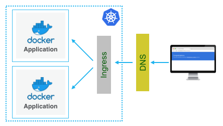

Use IBM ingress domain
In the previous step, the application was accessed with a not standard port. The service was exposed by way of Kubernetes NodePort feature.
Paid clusters come with an IBM-provided domain. This gives you a better option to expose applications with a proper URL and on standard HTTP/S ports.
Using the Kubernetes Ingress, you can set up the cluster inbound connection to the service: 
- Identify your IBM-provided Ingress domain. Replace
<CLUSTER_NAME>with the cluster assigned to you:to findWindowsBashibmcloud ks cluster-get <CLUSTER_NAME>ibmcloud ks cluster-get <CLUSTER_NAME>Ingress subdomain: mycluster.us-south.containers.appdomain.cloud Ingress secret: mycluster - Create an Ingress file
ingress-ibmdomain.ymlpointing to your domain with support for HTTP and HTTPS. Use the following file as a template, replacing all the values wrapped in <> with the appropriate values from the above output. service-name is the name under==> v1/Servicein the above step or runkubectl get svcto find the service name of type NodePort.apiVersion: extensions/v1beta1 kind: Ingress metadata: name: ingress-for-ibmdomain-http-and-https spec: tls: - hosts: - <nameofproject>.<ingress-sub-domain> secretName: <ingress-secret> rules: - host: <nameofproject>.<ingress-sub-domain> http: paths: - path: / backend: serviceName: <service-name> servicePort: 9080 - Deploy the Ingress
kubectl apply -f ingress-ibmdomain.yml - Access your application at
https://<nameofproject>.<ingress-sub-domain>